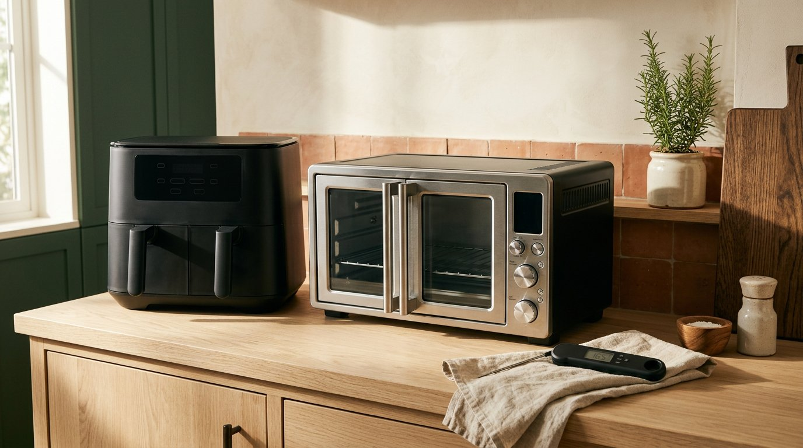

The Counterwise shortlist · November 2026
Five kitchen machines worth the counter space.
Three air fryers and two thermometers, chosen because each one does a different job well — not because they beat each other in a list.

30-second chooser
Which one fits your kitchen?
Three questions. No account, no tracking, nothing leaves this page. The answer is a starting point — read the pick page before you decide.
This chooser uses editorial fit (what you cook, where it lives, app tolerance), not price, ratings or sales data — none of which this site publishes. See the comparison table for the underlying claims.
The five
Picked for a job, not for a ranking
Each page opens with the decision, then shows the listing’s own numbers underneath. Where a number does not exist, the page says so instead of inventing one.
 CHEFMAN
CHEFMAN
Chefman 6 qt dual basket
Two baskets, two temperatures, one finish time.
 CHEFMAN
CHEFMAN
Chefman 8 qt TurboFry
One deep basket for big single batches.
 Emeril Lagasse
Emeril Lagasse
Emeril Lagasse 26 qt French door
One big cavity, a door instead of a drawer.


Two categories
Start where your kitchen is
If the answer to “what are you cooking?” is two things at different temperatures, you need a different machine than if it is one big thing. These two hubs cover both.


The notebook
Buying guides that answer a question
Written for the thing you actually typed into a search bar — not for a product name.
Right now
Start with the season you are in
The same five picks, entered from the question the calendar is asking. Each card opens a guide that shows its sources.
Which machine cooks what on the big day
Oven occupancy, job assignment, and the safety numbers that schedule the meal.
Five gifts for the cook who already has an oven
Match the person, not the preset count — and three checks before you wrap.
Capacity in portions, not in quarts
The five-minute check that turns a stated capacity into your household’s batch count.
The cleanup and counter-space trade-offs
Sink space, dishwasher geometry, and where the machine lives when it is idle.
Before you buy
Three questions that settle most of it
Answer these honestly and the shortlist usually answers itself.
Two foods, or one?
Cooking protein and a side to finish together? That is a dual-basket job. One big item? A single deep basket does it better and simpler.
Drawer, or door?
A drawer you lift out and wash in the sink. A French door you slide a tray into, in a machine that stays on the counter. Measure your counter depth first.
Checking, or watching?
Checking a number takes an instant-read. Watching a temperature climb over three hours takes a leave-in probe and an app. Both, honestly, is two tools.
November editorial picks
What to cook this month, and the question it asks
Timely framing of guides you can use tonight. These are editorial picks for November — not a popularity or demand claim. No such claim is made anywhere on this site.
Air fryer or toaster oven: can a tape measure settle it before you buy?
Three numbers on your own counter rule shapes out faster than any specification sheet.
Two baskets or one: does your weeknight actually have two foods in it?
Six quarts split in two is not six quarts. Start from last Wednesday’s dinner.
Dishwasher-safe does not mean dishwasher-sized: how do you check before you buy?
The coating rating and your rack are two different facts. Count the parts before the quarts.
Do you need a connected probe for a holiday turkey, or just a thermometer?
The USDA target is the same either way. What a connected probe buys is attention.
Holiday roast thermometer: instant-read or leave-in?
The long-cook question, with the USDA rest time front and centre.
Air-fryer leftovers: what reheats safely?
Reheat to 165°F, not to "hot". A ten-second check with an instant-read.
Printable tools
Measure first, buy second
Three worksheets you can print or fill on screen. They ask for your measurements, not your email, and nothing you type leaves the browser.
The five-minute capacity worksheet
Measure your kitchen, not the listing. Five minutes with a tape measure and the bag of food you actually buy will tell you more than any quart figure.
Cleanup and counter-space worksheet
The two costs nobody compares at purchase: how much of the sink it takes, and how much of the counter it permanently occupies.
Thermometer calibration worksheet
Calibrate once, then trust it. The ice-water check takes thirty seconds and tells you whether the number on the screen can be believed.
Buyer questions
Questions buyers ask, answered from the listing
Every answer is attributed to the manufacturer listing, to USDA FSIS, or to Amazon policy. Where the listing does not state a value, the answer says so.
Basket or oven-style — what should I compare?
How you get food in and out, and where the machine lives. A basket is a drawer you lift, shake and wash in the sink. An oven is a door and racks in a machine that stays on the counter. Measure counter depth and sink width first. See the basket-or-oven guide.
Source: Amazon.com Associates Central
How do I compare air fryer capacity without hype?
Ignore quarts until you have built a single flat layer of the food you actually buy, multiplied by the people you cook for, and compared that volume to the stated capacity. If your layer needs more than about half the stated capacity, expect two batches. The capacity worksheet walks through it.
Source: Amazon.com Associates Central
What are the cleanup and counter-space trade-offs?
Count dishwasher parts, not features. A drawer has about two parts that fit a normal sink; a French-door oven has racks, a basket, a drip tray and often a spit. "Dishwasher-safe" describes the coating, not the geometry. Decide the home before you buy — most air fryers end up on the counter permanently.
Source: Amazon.com Associates Central
What temperature is actually "done"?
USDA FSIS minimums: beef/pork/veal/lamb steaks, chops and roasts 145°F (62.8°C) with a 3-minute rest; ground meats 160°F (71.1°C); all poultry 165°F (73.9°C); fish and shellfish 145°F (62.8°C); leftovers and casseroles 165°F (73.9°C). Measured with a food thermometer before food leaves the heat source.
Instant-read or leave-in thermometer?
Checking a number takes an instant-read (the ThermoMaven listing states a 1-second read). Watching a temperature climb over a long cook takes a leave-in probe (the CHEF iQ Sense Gen3 listing states three probes and WiFi). Wanting both, honestly, is owning two tools.
Source: Amazon.com Associates Central
Can I see the price and star rating here?
No — deliberately. Amazon permits price display only when Amazon serves the link or data comes via Creators API / PA API. This static site has neither, so no price and no rating is reproduced. Check the listing for today’s price. See FLG-005.
Source: Amazon.com Associates Central
Has this desk tested any of these products?
No. FTC guidance states you cannot talk about your experience with a product you have not tried. Every page therefore describes what the manufacturer listing states, shows its arithmetic, and lists what it cannot tell you. See FLG-004.
Source: U.S. Federal Trade Commission
Why are some cells blank in the comparison table?
Because the listing does not state the value in the data this desk could read, and estimating it would be an inaccurate claim about a product — which the Program Policies prohibit. Blanks are labelled "not stated" rather than filled in. See FLG-014.
Source: Amazon.com Associates Central
Will it fit on my counter?
That is a tape-measure question, and this site cannot answer it for any of the three air fryers, because their listings do not state external dimensions in the data read here. Measure counter depth, clear height under the cabinet and your sink width, then read the vent clearance in the listing’s user-guide PDF. The fit guide walks through it.
Source: Amazon.com Associates Central
Is a dishwasher-safe basket enough to know?
No — "dishwasher-safe" is a statement about the coating surviving a wash, not about the part fitting on your rack. Measure clear rack height and the widest dimension of the basket, and count the parts that touch food. See the dishwasher-fit guide.
Source: Amazon.com Associates Central
Do I need a WiFi thermometer for a big roast?
Only if the value is watching the climb while you are elsewhere. The target temperature is identical either way — 165°F (73.9°C) for all poultry per USDA FSIS. A connected probe buys attention, not accuracy. Test range in your own kitchen before the day it matters.
How this is written
We describe what the listing says. We do not pretend we cooked with it.
This desk has not used any of these five products. So every page quotes the manufacturer’s stated figures, shows its arithmetic in the open, and lists what it cannot tell you — power draw, real usable volume, how it behaves on a Tuesday night.
A page that admits the gap is more useful than one that fills it with invented experience. That is the whole editorial position, and it is short enough to check.
Follow the next guide
One substantial guide every two weeks. The feed is live today — no address, no account, nothing to unsubscribe from.
An email list is not open yet, and this site will not show a form that collects an address it cannot yet deliver to. That decision is pending.